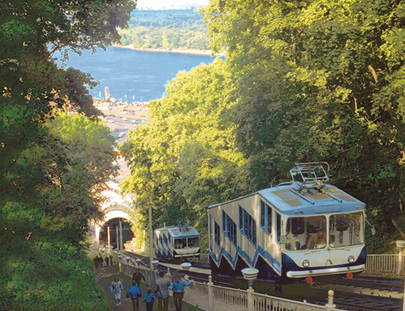
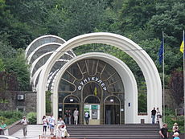
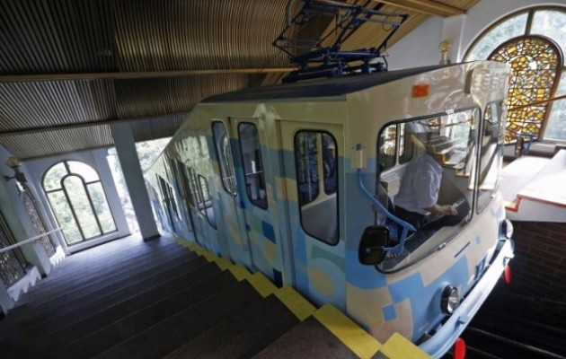
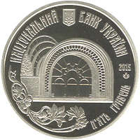
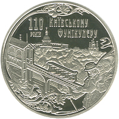

Kyiw Funicular it's a funicular system, that join historical Top city and Kyiw Podil. It goes about steep Vladimir Hill with amazing view on Dnipro. Funikular line make of two stations, and it operate by communal company Kievpastrans.It was built since 1902 for 1905.

Engineer Abrahamson gave an idea to build mechanical rise, that may appearance as little sloping railway with rope rod, and engineers Piatnitski and Baryshnikov developed this project.
Funikular was solemnly opened 20 May 1905.Stracks extands on 200 meters long. First time it joined
top terrace of Vladimir Hill with Borichev Tick street. .

For that time it was progressive engineering decision: rails lied on firm reinforced platform, also lifting machine working exactly. But in 1928 happened extreme situation: during planned substitution coache rope,that was on top station, it fell down and crashed bottom coache. First reconstruction was in 1928-1929.

Kyiv Funicular ork since 6:00 for 23:00. Passege for one trip on funikular cost 3 grn.
For anniversary-110 years of Kyiv Funicular NBU produced jubilee coin.


|